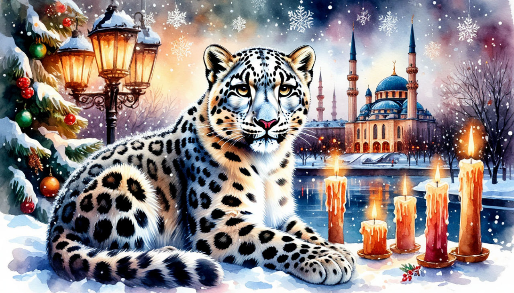

Новый Год в Казани

Даты тура:
с 30 декабря 2026 года (ср) по 3 января 2027 года (вс)
Стоимость тура* гостиница "Гагар Инн":
- 27 600 р. - взрослый
- 27 600 р. - пенсионеры/студенты/школьники
- 35 600 р./чел - одноместное размещение
Стоимость тура* гостиница "ВояжЪ":
- 24 700 р. - взрослый
- 24 700 р. - пенсионеры/студенты/школьники
- 30 200 р./чел - одноместное размещение
По программе:
- - Обзорная экскурсия по Казани
- - Экскурсия по территории Кремля
- - Экскурсия в мечеть Куль Шариф
- - Новогодняя экскурсия с глинтвейном в музей Баратынского
- - Экскурсия в Раифский монастырь
- - Вечерняя экскурсия Новогодняя Казань
- - Мастер-класс по Чак-Чаку
Программа тура:
1 день: Отправление
- 18-00- выезд из Костромы от ТРЦ "РИО" (Ул. Магистральная, 20), правый угол от центрального входа
2 день: Казань
- Прибытие в Казань
- Завтрак в кафе города.
- Обзорная экскурсия по городу «Новогодние краски Казани». В ярком новогоднем украшении и морозном запахе хвои, древний город предстанет в самом его сказочном воплощении!
- Экскурсия проходит по известным местам Казани: Старо-Татарская слобода, мечеть Марджани, озеро Кабан, татарская деревня Туган Авылым, площадь Свободы, Казанский университет, набережная НКЦ Казань, где открывается незабываемый вид на другую сторону города и казанскую Ривьеру, посещение места обретения Казанской иконы Божьей Матери — Богородицкого монастыря , в котором и хранится один из старейших списков этой иконы.
- Зимняя панорама города от Национального Культурного Центра города.
- Экскурсия «Белокаменная крепость». Казанский Кремль – главная достопримечательность города, памятник всемирного наследия ЮНЕСКО.
- Экскурсия в мечеть Куль Шариф. Во время экскурсии мы войдём в здание мечети, поднимемся к самому куполу и насладимся красотой её художественной архитектурой!
- Пешеходная экскурсия «Казанский Арбат». Побывать в Казани и не совершить экскурсию по Баумана – древнейшей улице города – значит не увидеть самого главного. Одно из старейших названий этой улицы – Большая Проломная.
- Обед в кафе
- Размещение в отеле.
- Свободное время.
3 день: Казань
- Поздний завтрак в отеле «шведский стол»
- Свободное время. Вы сможете прогуляться по городу, посетить фестивальные площадки, насладится праздничной атмосферой.
- 16-00 (Ориентировочно) Поздний выезд на экскурсию.
- Вечерняя экскурсия «Новогодняя Казань».
- Словно по взмаху волшебной палочки зажигаются огни города и начинается сказка. В свете праздничной иллюминации Казань становится еще прекраснее.
- Хотите увидеть это собственными глазами?
- Вы узнаете об истории новогодних праздников, сколько в мире дедов Морозов, и конечно, что такое Новый год по-татарски!
- Вы увидите:
- - центр семьи "Казан" на набережной реки Казанки;
- - главную ёлку столицы
- И как в детстве Вы сможете загадать заветное желание под ёлочкой и оно обязательно исполнится! Ведь это не простая, а главная ёлка Казани!
- Вечерняя Казань прекрасна всегда!
- Возвращение в отель.
4 день: Раифа
- Завтрак в отеле «шведский стол»
- Выезд на экскурсионную программу с вещами.
- Новогодняя экскурсия в один из интереснейших музеев Казани. В самом сердце старинной Казани, среди заснеженных особняков, спряталась настоящая жемчужина — единственный в России музей поэта Евгения Боратынского. В канун праздников его старинная усадьба сбрасывает пелену веков, чтобы пригласить вас на «Рождественский визит».
- Это не просто экскурсия, а магическое путешествие во времени. Вы пройдете по залам, утопающим в блеске мишуры и сиянии свечей, чтобы узнать, как встречали Рождество в дворянских семьях до революции. Под высокой елкой вас встретит сам Дед Мороз: вместе вы споете забытые рождественские гимны, а после согреетесь пряным зимним глинтвейном, вдыхая ароматы корицы и мандаринов. Оставьте суету за порогом — позвольте магии старинного рода Боратынских укутать вас в уют и предвкушение чуда
- Обед в кафе города с мастер - классом .
- Приглашаем на кулинарный мастер-класс по изготовлению татарского десерта - чак-чака! Вы научитесь приготовлению этого восточного лакомства.
- Экскурсия «Зимняя сказка в Раифе»
- В преддверии Рождества Христова Раифский монастырь окрашивается светом ярких огней. Ледовый городок открывает свои двери для прихожан и гостей!
- Переливаются на солнце величественные храмы и скульптурные композиции – чудеса, сотворённые руками мастеров! Доводилось ли Вам увидеть Казанский собор изо льда?
- Встречал ли Вас снежный Архангел Михаил?
- Вы увидите:
- - библейские персонажи и храмы, изготовленные изо льда;
- - библейские персонажи и храмы, изготовленные изо льда;
- - рождественский вертеп с подсветкой;
- - мозаичное панно с изображением чудотворного образа Грузинской иконы Божией Матери;
- - киоты для праздничных икон Рождества Христова и Крещения Господня
- На экскурсии по монастырю
- Вы увидите:
- - церковь во имя Святых преподобных Отцов в Синае и Раифе убиенных, от которой и произошло название монастыря;
- - церковь Веры, Надежды, Любови и матери их Софии;
- -озеро Раифское, "неквакующих" лягушек, великолепный сосновый лес;
- - часовню, освящённую патриархом с источником "святой воды"
- Вы посетите:
- - Собор Троицы Живоначальной (Троицкий собор);
- - Собор Грузинской иконы Божией Матери, где находится святыня монастыря - чудотворный Грузинский образ пресвятой Богородицы
- - В свободное от церковной службы время можно будет услышать пение монастырского квартета "Притча".
- После экскурсии у Вас будет возможность посетить церковные лавки, заказать требы, помолиться у святых икон, набрать воды из святого источника, а также прогуляться по берегу Раифского озера и купить Раифские сувениры.
- Осмотр «Храма всех религий» (внешний осмотр)
- В основе – идея о том, что все религии Мира — едины. Все они ведут к свету и добру. Это – смелая идея соединить в одном архитектурном строении, казалось бы, не сочетаемое. Комплекс объединяет 16 Мировых религий (в том числе и исчезнувших).
- Выезд домой.
5 день: Прибытие домой
Прибытие в Кострому в первой половине дня (ориентировочно)
В стоимость тура входит:
- - проживание в гостинице*
- * отель "Гагар Инн" 3* (Номер реестровой записи: С162024014547) или
- * отель "ВояжЪ" 3* (Номер реестровой записи: С)
- - питание: 3 завтрака + 2 обеда
- - услуги гида-экскурсовода
- - экскурсионная программа
- - автобусное обслуживание по программе тура
- Для бронирования необходимы данные паспорта РФ и свидетельства о рождении, если с вами путешествуют дети
- Предоплата – 50% от стоимости тура. Остаток за 30 дней до даты выезда.
- Любой тур можно оформить не выходя из дома. Подробнее: Тут
Стоимость тура не зафиксированы и могут быть изменены в большую или меньшую сторону в зависимости от уровня спроса в любой момент.
Время начала экскурсий и их порядок указано ориентировочно.
Фирма-исполнитель оставляет за собой право замены экскурсий без уменьшения общего объема экскурсионной программы.
По вопросам бронирования обращайтесь: